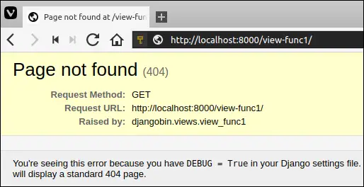

Creating URLs and Custom Response
Last updated on July 27, 2020
Reversing URL Patterns #
The process of creating a URL from the name of the URL pattern is called reversing a URL. So why we do that? Why not just hardcode URLs?
Because at a later date, If you want to update the URL structure you would have to manually visit each Python module and template to make the changes. On the other hand, if you have created URLs by reversing URL patterns, all you need is to update the URL pattern in the urls.py file. Templates and modules will pick the changes automatically.
reverse() Function #
To reverse a URL we use the reverse() function. It accepts the name of the URL pattern and returns URL without the host portion. When reverse() can't reverse a URL It raises NoReverseMatch exception. To use this function we first have to import it from django.shortcuts module.
To see reverse() method in action open interactive Python shell by issuing the following command.
1 2 3 4 5 6 7 | $ ./manage.py shell
Python 3.5.2 (default, Nov 23 2017, 16:37:01)
[GCC 5.4.0 20160609] on linux
Type "help", "copyright", "credits" or "license" for more information.
(InteractiveConsole)
>>>
>>>
|
Noticed something different here? Well, here we are starting Python shell using the ./manage.py shell instead of just python. But why? Because in addition to invoking Python interpreter ./manage.py shell imports bare minimum of Django to work with. We will refer to this shell as Django shell.
Currently, our djangobin app consists of following 6 URL patterns:
djangobin/django_project/djangobin/urls.py
1 2 3 4 5 6 7 8 9 10 11 | from django.conf.urls import url
from . import views
urlpatterns = [
url(r'^time/$', views.today_is, name='time'),
url(r'^$', views.index, name='index'),
url(r'^user/(?P<username>[A-Za-z0-9]+)/$', views.profile, name='profile'),
url(r'^books/$', views.book_category, name='book_category'),
url(r'^books/(?P<category>[\w-]+)/$', views.book_category, name='book_category'),
url(r'^extra/$', views.extra_args, name='extra_args'),
]
|
Let's try reversing each URL pattern one by one in the Django shell.
1 2 3 4 5 6 7 8 9 10 11 12 13 14 15 16 17 18 19 20 | >>>
>>> from django.shortcuts import reverse
>>>
>>>
>>> reverse("time")
'/time/'
>>>
>>>
>>> reverse("index")
'/'
>>>
>>>
>>> reverse("book_category")
'/books/'
>>>
>>>
>>> reverse("extra_args")
'/extra/'
>>>
>>>
|
We have successfully reversed 4 URLs. What about the remaining two URL patterns?
The remaining two URL patterns have one or more dynamic components in it, as a result, we are required to pass these components to successfully reverse them. Trying to call reverse() on such URL patterns without passing dynamic components will throw a NoReverseMatch exception.
1 2 3 4 5 6 7 | >>>
>>> reverse("profile")
...
django.urls.exceptions.NoReverseMatch: Reverse for 'profile' with no arguments not found. 1 pattern(s) tried: ['user/(?P<username>[A-Za-z0-9]+)/$']
>>>
>>>
Traceback (most recent call last):
|
Also note that there are two URL patterns of the same name, book_category, the first one has no dynamic component but the second one has one dynamic component. When we called reverse("book_category") in the preceding example Django was smart enough to infer that we want to reverse URL without the dynamic component.
To reverse dynamic URLs pattern pass dynamic components to args keyword argument as a list.
reverse('url_pattern', args=['arg1', 'arg2'])
Here are some examples:
1 2 3 4 5 6 7 8 9 10 | >>>
>>>
>>> reverse("book_category", args=['horror'])
'/books/horror/'
>>>
>>>
>>> reverse("profile", args=['foobar'])
'/user/foobar/'
>>>
>>>
|
We also have the option to pass dynamic components to reverse() as a dictionary:
reverse('url_pattern', kwargs={'arg1': 'val1', 'arg2': 'val2'})
Here are some examples:
1 2 3 4 5 6 7 8 9 10 | >>>
>>>
>>> reverse("book_category", kwargs={'category': 'crime'})
'/books/crime/'
>>>
>>>
>>> reverse("profile", kwargs={'username': 'tor'})
'/user/tor/'
>>>
>>>
|
When using kwargs keep in mind that the name of the key must be same as that of the named group in the URL pattern. Otherwise, you will get NoReverseMatch exception.
Custom Response #
By default, HttpResponse objects gets created with Content-Type:text/html header and HTTP status code of 200. We can change content type header and status code using content_type and status keyword arguments, respectively.
1 2 | def custom_response(request):
return HttpResponse("<p>Custom response 1</p>", content_type='text/plain')
|
This will send the response to the client using content type text/plain. In other words, the client (browser) would render the text <p>Custom response 1</p> literally, instead of interpreting it as HTML.
When building API, you will need to send data as JSON. This can be easily done by setting the content_type header to application/json. For example:
1 2 3 4 | def custom_response(request):
import json
data = {'name': 'john', 'age': 25}
return HttpResponse(json.dumps(data), content_type='application/json')
|
And here is how we can change the default status code:
1 2 | def custom_response(request):
return HttpResponse("<h1>HTTP 404 Not Found</h1>", status=404)
|
This view function will return HTTP 404 Not Found Error with content <h1>HTTP 404 Not Found</h1>.
We can also set additional headers by treating HttpResponse instance as a dictionary.
1 2 3 4 | def custom_header(request):
res = HttpResponse(status=302)
res['location'] = 'http://example.com/'
return res
|
This view function will redirect the user to http://example.com/ using a temporary redirect (HTTP 302 redirect).
Here is another example:
1 2 3 4 | def custom_header(request):
res = HttpResponse('some data')
res['content-disposition'] = 'attachment; filename=file.txt;'
return res
|
This view function will force the browser to treat the response as a file attachment. We will use the exact same technique to download the code snippets.
Common subclasses of HttpResponse #
The following table lists some common subclasses of HttpResponse:
| ClassName | Description |
|---|---|
HttpResponseRedirect |
It takes path to redirect to as a first argument and perform a temporary redirect (HTTP status code 302). The path can fully qualified (like http://example.com/contact), absolute (/books/crime/) or relative (search/). |
HttpResponsePermanentRedirect |
Same as HttpResponseRedirect but performs a permanent redirect (HTTP status code 301) |
HttpResponseNotFound |
Same as HttpResponse but returns a status code of 404. |
HttpResponseForbidden |
Same as HttpResponse but returns a status code of 403. |
HttpResponseBadRequest |
Same as HttpResponse but returns a status code of 400. |
HttpResponseServerError |
Same as HttpResponse but returns a status code of 500. |
All these classes live in django.http package. But you can also import
HttpResponseRedirect and HttpResponsePermanentRedirect classes from django.shortcuts module.
The following listing demonstrates how to use these classes:
1 2 3 4 5 6 7 8 9 10 11 12 13 14 15 16 17 18 19 20 21 22 23 24 25 26 27 | from django.http import (
HttpResponseRedirect, HttpResponsePermanentRedirect, HttpResponseNotFound,
HttpResponseBadRequest, HttpResponseForbidden, HttpResponseServerError)
def tem_redirect(request):
return HttpResponseRedirect("http://example.com")
def perm_redirect(request):
return HttpResponsePermanentRedirect("http://example.com")
def not_found(request):
return HttpResponseNotFound("Not Found")
def forbidden(request):
return HttpResponseForbidden("Request Forbidden - 403")
def bad_request(request):
return HttpResponseBadRequest("Bad Request - 400")
def server_error(request):
return HttpResponseServerError("Internal Server Error - 500")
|
Built-in Shortcuts for triggering HTTP Errors #
Django also provides some shortcuts for triggering HTTP errors explicitly from your view function. The following table lists some exceptions and the HTTP errors they trigger:
| Exception | HTTP Status Code |
|---|---|
django.http.Http404 or django.shortcuts.Http404 |
404 Not Found |
django.core.exceptions.SuspiciousOperation |
400 Bad Request |
django.core.exceptions.PermissionDenied |
403 Forbidden |
Exception |
500 Internal Server Error |
The following listing shows how to use these exceptions:
1 2 3 4 5 6 7 8 9 10 11 12 13 14 15 16 17 18 19 20 21 22 23 24 25 26 27 28 29 30 | from django.http import Http404
from django.core.exceptions import SuspiciousOperation, PermissionDenied
def view_func1(request):
if True: # some condition
raise Http404 # show 404 Not Found
else:
return HttpResponse("hello")
def view_func2(request):
if True: # some condition
raise SuspiciousOperation # show 400 Bad Request
else:
return HttpResponse("hello")
def view_func3(request):
if True: # some condition
raise PermissionDenied # show 403 Forbidden
else:
return HttpResponse("hello")
def view_func4(request):
if True: # some condition
raise Exception # show 500 Internal Server Error
else:
return HttpResponse("hello")
|
When DEBUG is True all these exceptions will show a detailed page describing the nature of the problem. For example, Http404 exception will generate a page like this:

And SuspiciousOperation exception will generate a page like this:
Once we go in Production (DEBUG is False) they all will return a generic error page, just containing the name of the error without any sensitive details. For example, Http404 exception will generate a page like this:
And PermissionDenied exception will generate a page like this:
redirect() shortcut #
In the previous sections, we have seen several ways to perform temporary (HTTP status code 302) and permanent redirects (HTTP status code 301). The redirect() is a shortcut function to redirect the users to different URLs. It accepts URL path or name of the URL pattern or fully qualified URL to redirect to. To use it first import it from django.shortcuts module.
from django.shortcuts import redirect
The following view function will redirect the user to http://example.com.
1 2 | def view_func(request):
return redirect('http://example.com')
|
By default, the redirect() performs a temporary redirect (HTTP status code 302), to perform a permanent redirect pass permanent=True. For example:
1 2 | def view_func(request):
return redirect('http://example.com', permanent=True)
|
If the URL accepts arguments, pass them to redirect() after the name of the URL pattern. For example:
1 2 | def view_func(request):
return redirect('profile', 'foobar', permanent=True)
|
This view function will redirect the user to /user/foobar/ using a permanent redirect.
Namespacing URLs #
As your project grows, you will have a hard time preventing name clashes between your URL patterns. For example, let's say we have two apps, a forum and a blog. Both have a URL pattern named index in their urls.py file. So What would happen if you try to reverse index URL pattern using the reverse() function?
Django will generate the URL based upon the order in the which the app URLConf is registered in the sitewide urls.py file. The URLConf which come at the end of the list will override the URL pattern in the of the same name in the URLConf above it.
We can solve this issue by adding a namespace to our URL patterns. Namespacing URLs allows us to refer to a group of URLs using a unique identifier.
There are two ways to add the namespace:
app_nameattribute .include()function.
Let's explore both methods:
Using app_name #
Open urls.py from djangobin app and define app_name variable just above urlpatterns list as follows:
djangobin/django_project/djangobin/urls.py
1 2 3 4 5 6 7 8 9 10 11 12 13 | from django.conf.urls import url
from . import views
app_name = 'djangobin'
urlpatterns = [
url(r'^time/$', views.today_is, name='time'),
url(r'^$', views.index, name='index'),
url(r'^user/(?P<username>[A-Za-z0-9]+)/$', views.profile, name='profile'),
url(r'^books/$', views.book_category, name='book_category'),
url(r'^books/(?P<category>[\w-]+)/$', views.book_category, name='book_category'),
url(r'^extra/$', views.extra_args, name='extra_args'),
]
|
From now on, to reverse URLs you have to precede the name of the URL pattern with djangobin followed by a colon (:).
djangobin:url_name
The following shell session demonstrates reversing of namespaced URL patterns:
1 2 3 4 5 6 7 8 9 10 11 12 13 14 15 16 | >>>
>>> reverse("djangobin:time")
'/time/'
>>>
>>> reverse("djangobin:profile", args=['foobar'])
'/user/foobar/'
>>>
>>>
>>> reverse("djangobin:book_category", args=['biography'])
'/books/biography/'
>>>
>>>
>>> reverse("djangobin:index")
'/'
>>>
>>>
|
Trying to reverse URLs without specifying the namespace will result in NoReverseMatch exception:
1 2 3 4 5 6 7 8 9 10 11 12 13 | >>>
>>> reverse("index")
Traceback (most recent call last):
...
django.urls.exceptions.NoReverseMatch: Reverse for 'index' not found. 'index' is not a valid view function or pattern name.
>>>
>>>
>>> reverse("book_category", args=['action'])
Traceback (most recent call last):
...
django.urls.exceptions.NoReverseMatch: Reverse for 'book_category' not found. 'book_category' is not a valid view function or pattern name.
>>>
>>>
|
Using include() function #
Recall that include() function is used to include a URLConf from an application under the specified path.
Another way to create namespace is to define it while including a URLConf. Open sitewide urls.py file and modify include() to include an extra keyword argument named namespace as follows:
djangobin/django_project/django_project/urls.py
1 2 3 4 5 6 7 | from django.conf.urls import url, include
from django.contrib import admin
urlpatterns = [
url(r'', include('djangobin.urls', namespace='djangobin')),
url(r'^admin/', admin.site.urls),
]
|
Throughout this tutorial, we will use the second method to namespace URLs, so comment out the line where we have defined the namespace using the app_name variable in djangobin's urls.py file.
That's all is needed to create namespaced URLs.
Load Comments